1. Enchanted Village
1–50 · Büyülü köy

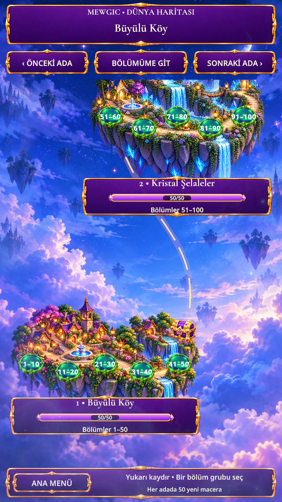
PART13J — Ayrı QA profili, gerçek oyuncu kaydı değiştirilmedi. Görüntüler Unity Camera.Render / gerçek LevelMap UI çıktısıdır. Telefon görüntüsü değildir.

Referansın ayrıntılı fantastik ada sanatı, mor/mavi/altın renkleri ve ışıklı mimarisi temel alındı. Mevcut harita daha seyrek kompozisyon ve 10 bölümlük grup düğümleri kullanır; referansla piksel düzeyinde aynı arayüz değildir.
1–50 · Büyülü köy

51–100 · Kristal şelaleler
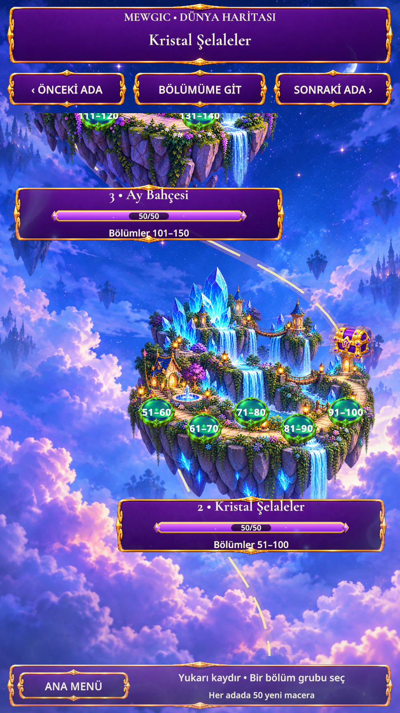
101–150 · Ay bahçesi
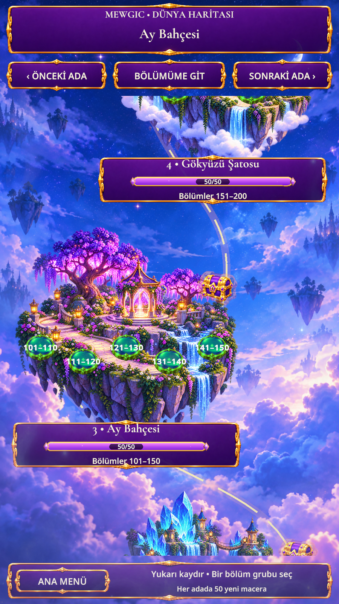
151–200 · Gökyüzü şatosu
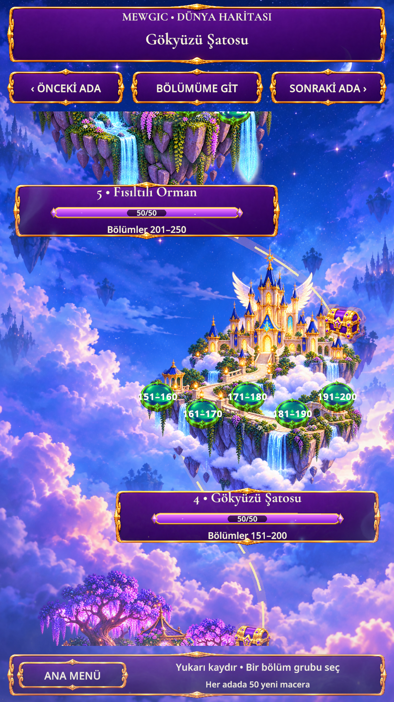
201–250 · Büyülü orman
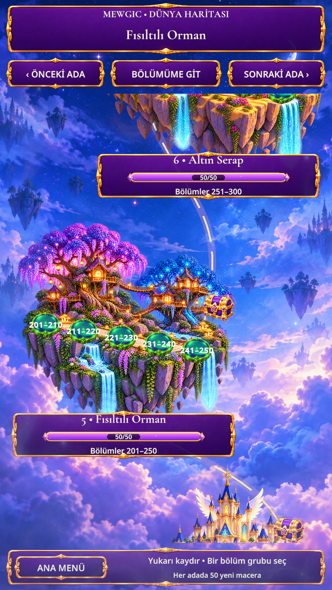
251–300 · Altın çöl ve vaha
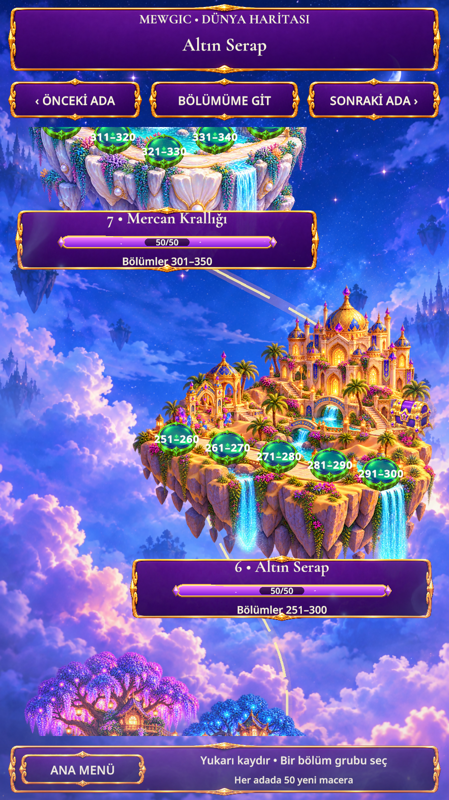
301–350 · Mercan ve su krallığı
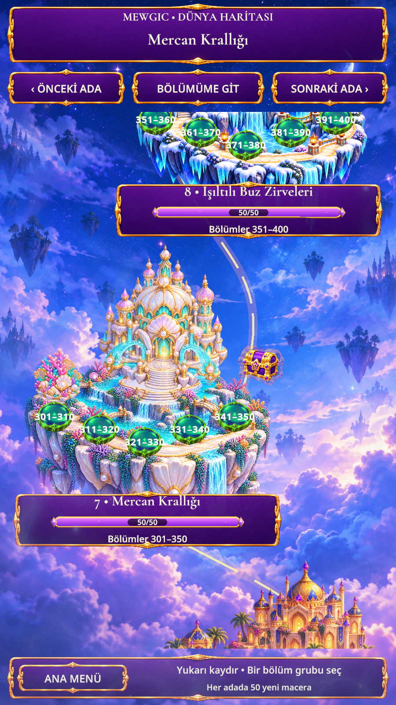
351–400 · Buzlu kristal dağları
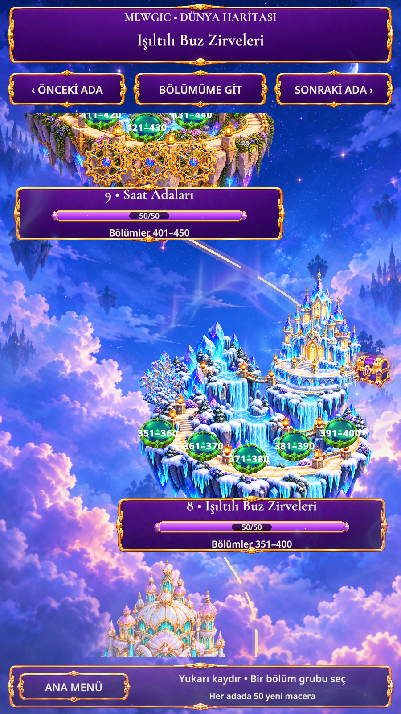
401–450 · Saat ve mekanik adalar
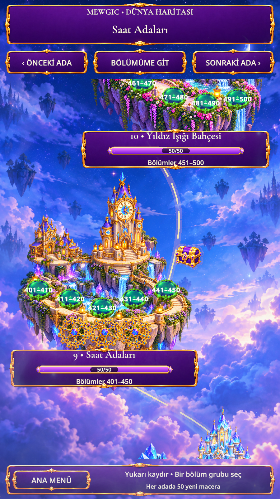
451–500 · Yıldızlı çiçek bahçesi
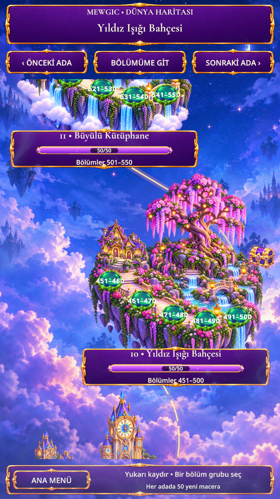
501–550 · Büyülü kitaplar ve akademi
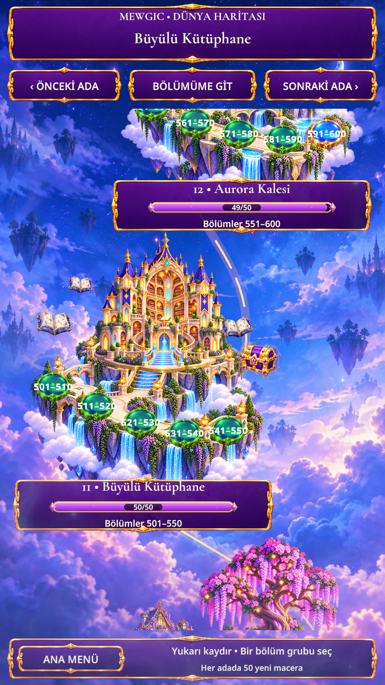
551–600 · Gökyüzü ve aurora kalesi
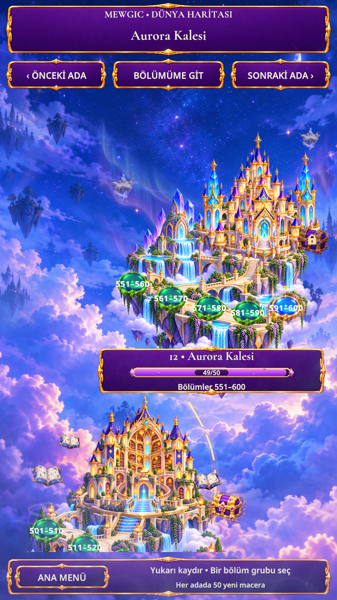